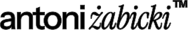

<!DOCTYPE html>
<html lang="pl">
<head>
    <meta charset="UTF-8">
    <meta name="viewport" content="width=device-width, initial-scale=1.0">
    <link rel="icon" type="image/svg+xml" href="sym.svg">
    <title>antoni. żabicki // portfolio</title>
    
    <!-- Tailwind CSS -->
    <script src="https://cdn.tailwindcss.com"></script>
    
    <!-- React & ReactDOM -->
    <script crossorigin src="https://unpkg.com/react@18/umd/react.production.min.js"></script>
    <script crossorigin src="https://unpkg.com/react-dom@18/umd/react-dom.production.min.js"></script>
    
    <!-- Babel -->
    <script src="https://unpkg.com/@babel/standalone/babel.min.js"></script>
    
    <!-- Framer Motion -->
    <script src="https://unpkg.com/framer-motion@10.16.4/dist/framer-motion.js"></script>
    
    <!-- Google Fonts -->
    <link rel="preconnect" href="https://fonts.googleapis.com">
    <link rel="preconnect" href="https://fonts.gstatic.com" crossorigin>
    <link href="https://fonts.googleapis.com/css2?family=Instrument+Sans:ital,wght@0,400..700;1,400..700&family=Instrument+Serif:ital@0;1&family=JetBrains+Mono:wght@400;700&display=swap" rel="stylesheet">

    <style>
        :root {
            /* Domyślny tryb jasny */
            --bg-color: #e5e3dc; 
            --text-color: #0f140e; 
            --accent-alt: #cc4522; /* rdzawo-pomarańczowy */
            --accent-green: #597c1d; 
            --grid-line: rgba(15, 20, 14, 0.04);
            --logo-filter: none;
            --image-blend: multiply;
        }

        /* Klasa dodawana do html przez React na prawy klik */
        html.dark-theme {
            --bg-color: #0f140e; 
            --text-color: #e5e3dc;
            --grid-line: rgba(229, 227, 220, 0.04);
            --logo-filter: invert(1);
            --image-blend: normal;
        }

        body, html {
            background-color: var(--bg-color);
            color: var(--text-color);
            font-family: 'Instrument Sans', sans-serif;
            margin: 0;
            overflow-x: hidden;
            cursor: none; 
            transition: background-color 0.4s ease, color 0.4s ease;
            
            /* BLOKADA ZAZNACZANIA TEKSTU I ZDJĘĆ */
            -webkit-user-select: none;
            -moz-user-select: none;
            -ms-user-select: none;
            user-select: none;
        }

        /* BLOKADA PRZECIĄGANIA ZDJĘĆ (GHOSTING) */
        img {
            -webkit-user-drag: none;
            -khtml-user-drag: none;
            -moz-user-drag: none;
            -o-user-drag: none;
            user-drag: none;
            pointer-events: none; /* blokuje interakcje myszy ze zdjęciem */
        }
        
        .serif { font-family: 'Instrument Serif', serif; }
        .mono { font-family: 'JetBrains Mono', monospace; }
        
        .bg-grid {
            background-size: 50px 50px;
            background-image: 
                linear-gradient(to right, var(--grid-line) 1px, transparent 1px),
                linear-gradient(to bottom, var(--grid-line) 1px, transparent 1px);
            transition: background-image 0.4s ease;
        }

        /* Drobny i animowany szum */
        .bg-noise {
            position: fixed;
            top: -5%; left: -5%; width: 110vw; height: 110vh;
            pointer-events: none;
            z-index: 50;
            opacity: 0.12;
            background-image: url('data:image/svg+xml;utf8,%3Csvg viewBox="0 0 200 200" xmlns="http://www.w3.org/2000/svg"%3E%3Cfilter id="n"%3E%3CfeTurbulence type="fractalNoise" baseFrequency="2.5" numOctaves="3" stitchTiles="stitch"/%3E%3C/filter%3E%3Crect width="100%25" height="100%25" filter="url(%23n)"/%3E%3C/svg%3E');
            animation: staticNoise 0.2s steps(2) infinite;
        }

        @keyframes staticNoise {
            0% { transform: translate(0, 0); }
            25% { transform: translate(1%, -1%); }
            50% { transform: translate(-1%, 1%); }
            75% { transform: translate(-2%, -1%); }
            100% { transform: translate(1%, 2%); }
        }

        ::-webkit-scrollbar { width: 6px; }
        ::-webkit-scrollbar-track { background: var(--bg-color); }
        ::-webkit-scrollbar-thumb { background: var(--text-color); }

        .nav-logo {
            height: 24px;
            width: auto;
            display: block;
        }

        .img-industrial {
            filter: grayscale(20%) contrast(110%);
        }

        @keyframes fadeInUp {
            from { opacity: 0; transform: translateY(30px); }
            to { opacity: 1; transform: translateY(0); }
        }
        .animate-fade-in {
            animation: fadeInUp 0.8s cubic-bezier(0.6, 0.01, -0.05, 0.9) forwards;
        }
    </style>
</head>
<body>
    <div class="bg-noise"></div>
    <div id="root"></div>

    <script type="text/babel">
        const { useState, useEffect } = React;
        const { motion } = window.Motion;

        const App = () => {
            const[mousePosition, setMousePosition] = useState({ x: 0, y: 0 });
            const[cursorVariant, setCursorVariant] = useState("default");
            const[isDarkTheme, setIsDarkTheme] = useState(false);

            useEffect(() => {
                const mouseMove = (e) => {
                    setMousePosition({ x: e.clientX, y: e.clientY });
                };
                window.addEventListener("mousemove", mouseMove);
                return () => window.removeEventListener("mousemove", mouseMove);
            },[]);

            // Aktualizacja motywu
            useEffect(() => {
                if (isDarkTheme) {
                    document.documentElement.classList.add('dark-theme');
                } else {
                    document.documentElement.classList.remove('dark-theme');
                }
            }, [isDarkTheme]);

            // Prawy klik odwraca kolory
            const handleContextMenu = (e) => {
                e.preventDefault(); // blokuje domyślne menu przeglądarki
                setIsDarkTheme(!isDarkTheme);
            };

            const variants = {
                default: {
                    x: mousePosition.x - 8, y: mousePosition.y - 8,
                    width: 16, height: 16,
                    backgroundColor: "var(--text-color)", borderRadius: "50%",
                    mixBlendMode: "difference", transition: { type: "tween", ease: "backOut", duration: 0.1 }
                },
                explore: {
                    x: mousePosition.x - 30, y: mousePosition.y - 30,
                    width: 60, height: 60,
                    backgroundColor: "transparent", border: "2px solid var(--accent-alt)",
                    borderRadius: "0%", rotate: 45,
                    mixBlendMode: "normal", transition: { type: "spring", stiffness: 300, damping: 20 }
                },
                tech: {
                    x: mousePosition.x - 25, y: mousePosition.y - 25,
                    width: 50, height: 50,
                    backgroundColor: "transparent", border: "1px solid var(--accent-green)", borderRadius: "0%",
                    mixBlendMode: "normal", transition: { type: "tween", ease: "circOut", duration: 0.15 }, rotate: 45
                },
                link: {
                    x: mousePosition.x - 20, y: mousePosition.y - 20,
                    width: 40, height: 40,
                    backgroundColor: "var(--text-color)", borderRadius: "50%",
                    mixBlendMode: "difference", transition: { type: "spring", stiffness: 400, damping: 25 }
                }
            };

            const enterExplore = () => setCursorVariant("explore");
            const enterTech = () => setCursorVariant("tech");
            const enterLink = () => setCursorVariant("link");
            const leaveCursor = () => setCursorVariant("default");

            return (
                <div className="bg-grid lowercase min-h-screen" onContextMenu={handleContextMenu}>
                    {/* CUSTOM KURSOR */}
                    <motion.div
                        className="fixed top-0 left-0 pointer-events-none z-50 flex items-center justify-center font-bold text-[10px]"
                        variants={variants}
                        animate={cursorVariant}
                    >
                        {cursorVariant === 'explore' && <span className="absolute -top-4 -right-4 text-[var(--accent-alt)] mono text-[8px] -rotate-45">a.ż</span>}
                        {cursorVariant === 'tech' && <span className="absolute -top-6 -right-6 text-[var(--accent-green)] mono text-[8px] -rotate-45">coord.</span>}
                    </motion.div>

                    {/* NAWIGACJA */}
                    <nav className="fixed top-0 w-full p-6 flex justify-between items-center z-40 mix-blend-difference text-[#e5e3dc] mono text-[10px] tracking-widest leading-tight">
                        <div className="flex flex-col">
                            
                        </div>
                        
                        <div className="flex flex-col text-right hidden sm:flex">
                            <span>poznań, poland</span>
                            <span className="opacity-50">status: active</span>
                        </div>
                        <div className="flex flex-col text-right opacity-50">
                            <span>RMB // dark_mode</span>
                        </div>
                    </nav>

                    {/* SEKCJA HERO */}
                    <section className="relative min-h-screen flex flex-col justify-center px-6 md:px-16 pt-32 pb-20" onMouseEnter={enterExplore} onMouseLeave={leaveCursor}>
                        
                        <div className="w-full max-w-5xl mx-auto flex justify-between items-end mb-16 mono text-[10px] opacity-70 border-b border-[var(--text-color)] pb-4 z-20 mt-10 md:mt-0">
                            <div>sys: arch_01 // <span className="text-[var(--accent-alt)] font-bold">#digital_art</span></div>
                            <div className="text-right">age: 17<br/>music x design</div>
                        </div>

                        <div className="animate-fade-in flex flex-col items-center justify-center relative w-full max-w-4xl mx-auto text-center z-30">
                            
                            {/* LOGO GŁÓWNE */}
                            
                            
                            <p className="text-base md:text-xl leading-relaxed opacity-85 text-center px-4 max-w-3xl">
                                Antoni Żabicki to 17-letni twórca cyfrowy pochodzący z Poznania, aktywnie działający na styku muzyki, designu oraz projektów internetowych. Jego działalność obejmuje zarówno inicjatywy indywidualne, jak i współtworzone zespołowo. W swoich projektach odpowiada w pełni lub częściowo za koncepcję, realizację oraz rozwój strategiczny, koncentrując się na budowaniu spójnych i długofalowych struktur kreatywnych.
                            </p>

                            {/* ZDJĘCIE DODANE PONOWNIE PONIŻEJ OPISU */}
                            <div className="mt-14 border border-[var(--text-color)] p-2 bg-[var(--bg-color)] shadow-[8px_8px_0_var(--text-color)] w-fit mx-auto relative group cursor-none" onMouseEnter={enterLink} onMouseLeave={enterExplore}>
                                
                                <div className="absolute top-0 right-0 p-2 mono text-[8px] bg-[var(--text-color)] text-[var(--bg-color)] transition-colors duration-400 pointer-events-none">
                                    img1.png // raw
                                </div>
                            </div>
                            
                        </div>
                    </section>

                    {/* SEKCJA MUZYCZNA */}
                    <section className="py-24 px-6 md:px-16 bg-[var(--text-color)] text-[var(--bg-color)] relative overflow-hidden transition-colors duration-400" onMouseEnter={enterTech} onMouseLeave={leaveCursor}>
                        <div className="absolute top-0 right-[-10%] text-[20vw] serif italic opacity-[0.03] pointer-events-none">
                            soundscapes.
                        </div>

                        <div className="border-t border-[var(--bg-color)] border-opacity-30 pt-4 flex justify-between mono text-[10px] mb-20 opacity-60">
                            <span>01 / projekty_muzyczne</span>
                            <span>frequencies // audio_sys</span>
                        </div>

                        <div className="grid grid-cols-1 md:grid-cols-12 gap-16">
                            <motion.div 
                                initial={{ opacity: 0, x: -50 }}
                                whileInView={{ opacity: 1, x: 0 }}
                                viewport={{ once: true, margin: "-100px" }}
                                className="md:col-span-4"
                            >
                                <h2 className="text-6xl md:text-8xl font-bold tracking-tighter mb-4 leading-[0.9]">
                                    audio.<br/>
                                    <span className="serif italic" style={{WebkitTextStroke: '1px var(--bg-color)', color: 'transparent'}}>aliases.</span>
                                </h2>
                                <p className="mono text-[11px] opacity-70 leading-loose mt-8">
                                    Kluczowym obszarem działalności Antoniego jest muzyka elektroniczna, realizowana pod kilkoma aliasami o odmiennym charakterze:
                                </p>
                            </motion.div>
                            
                            <div className="md:col-span-8 flex flex-col gap-6">
                                <div className="border border-[var(--bg-color)] border-opacity-20 p-6 md:p-10 hover:bg-[var(--accent-green)] hover:text-[var(--text-color)] hover:border-transparent transition-all duration-300 group" onMouseEnter={enterLink} onMouseLeave={enterTech}>
                                    <div className="flex flex-col md:flex-row justify-between md:items-center mb-4">
                                        <h3 className="text-4xl md:text-6xl font-bold tracking-tight">quei</h3>
                                    </div>
                                    <p className="opacity-80 md:w-5/6">
                                        główny projekt muzyczny, stanowiący centralny punkt jego działalności artystycznej. W ramach tego aliasu tworzy nowoczesną muzykę elektroniczną, obejmującą przede wszystkim gatunki takie jak EDM, house oraz drum & bass. Projekt nie ogranicza się jednak do jednej stylistyki - istotnym elementem jest eksperymentowanie z brzmieniem oraz poszukiwanie nowych kierunków muzycznych.
                                    </p>
                                </div>

                                <div className="border border-[var(--bg-color)] border-opacity-20 p-6 md:p-10 hover:bg-[var(--accent-alt)] hover:text-[#e5e3dc] hover:border-transparent transition-all duration-300 group" onMouseEnter={enterLink} onMouseLeave={enterTech}>
                                    <div className="flex flex-col md:flex-row justify-between md:items-center mb-4">
                                        <h3 className="text-4xl md:text-6xl font-bold tracking-tight">rscky</h3>
                                    </div>
                                    <p className="opacity-80 md:w-5/6">
                                        projekt poboczny o bardziej eksperymentalnym charakterze. Dwa razy w roku publikowane są w jego ramach albumy zawierające utwory niewydane wcześniej, odrzuty produkcyjne oraz materiały testowe. Projekt pełni funkcję archiwum procesu twórczego oraz przestrzeni do swobodniejszej ekspresji.
                                    </p>
                                </div>

                                <div className="border border-[var(--bg-color)] border-opacity-20 p-6 md:p-10 hover:bg-[var(--bg-color)] hover:text-[var(--text-color)] hover:border-transparent transition-all duration-300 group" onMouseEnter={enterLink} onMouseLeave={enterTech}>
                                    <div className="flex flex-col md:flex-row justify-between md:items-center mb-4">
                                        <h3 className="text-4xl md:text-6xl font-bold tracking-tight">B4CKEND</h3>
                                    </div>
                                    <p className="opacity-80 md:w-5/6">
                                        drum and bassowy duet muzyczny współtworzony z Flajussem. Projekt skupia się na pracy zespołowej i rozwijaniu wspólnego kierunku artystycznego, łącząc różne podejścia do produkcji muzycznej.
                                    </p>
                                </div>
                            </div>
                        </div>
                    </section>

                    {/* ANIMOWANY PAS (MARQUEE Z WŁASNYMI LOGO) */}
                    <section className="py-10 overflow-hidden bg-[var(--accent-green)] text-[var(--bg-color)] flex items-center border-y-2 border-[var(--text-color)] transition-colors duration-400" onMouseEnter={enterLink} onMouseLeave={leaveCursor}>
                        <motion.div 
                            animate={{ x:[0, -1200] }}
                            transition={{ repeat: Infinity, duration: 15, ease: "linear" }}
                            className="flex whitespace-nowrap text-5xl md:text-7xl font-bold tracking-tighter items-center"
                        >
                            <div className="mx-8 flex items-center gap-4">
                                what-is-next™
                            </div>
                            
                            <div className="mx-8 flex items-center gap-4 text-transparent serif italic" style={{ WebkitTextStroke: '1.5px var(--bg-color)' }}>
                                witrynaodzera™
                            </div>
                            
                            <div className="mx-8 flex items-center gap-4">
                                antoni żabicki
                            </div>

                            <div className="mx-8 flex items-center gap-4 opacity-50 serif italic">
                                the tribbe
                            </div>

                            {/* Pętla duplikująca w celu ciągłości animacji */}
                            <div className="mx-8 flex items-center gap-4">
                                what-is-next™
                            </div>
                            
                            <div className="mx-8 flex items-center gap-4 text-transparent serif italic" style={{ WebkitTextStroke: '1.5px var(--bg-color)' }}>
                                witrynaodzera™
                            </div>
                        </motion.div>
                    </section>

                    {/* SEKCJA STRUKTURY */}
                    <section className="py-24 px-6 md:px-16 min-h-[80vh] relative" onMouseEnter={leaveCursor}>
                        <div className="absolute top-10 left-10 md:left-1/2 w-[1px] h-[80%] bg-[var(--text-color)] opacity-10 -z-10 hidden md:block"></div>
                        
                        <div className="flex flex-col md:flex-row gap-20">
                            <div className="md:w-1/2 pr-0 md:pr-10">
                                <h3 className="text-5xl md:text-6xl font-bold mb-12 tracking-tighter leading-none">
                                    kreatywne<br/>
                                    <span className="serif italic">struktury.</span>
                                </h3>
                                
                                <div className="space-y-12 mono text-[11px]">
                                    <div className="group cursor-none" onMouseEnter={enterLink} onMouseLeave={leaveCursor}>
                                        <div className="flex justify-between items-end border-b border-[var(--text-color)] border-opacity-30 pb-2 mb-3">
                                            <span className="font-bold text-lg font-sans tracking-tight">what-is-next™</span>
                                        </div>
                                        <p className="opacity-70 font-sans text-sm group-hover:text-[var(--accent-alt)] transition-colors duration-300">
                                            nadrzędny brand kreatywny, który stanowi fundament dla wszystkich pozostałych projektów. Jego celem jest integracja różnych obszarów działalności w jedną, spójną strukturę oraz budowanie rozpoznawalnej tożsamości.
                                        </p>
                                    </div>
                                    <div className="group cursor-none" onMouseEnter={enterLink} onMouseLeave={leaveCursor}>
                                        <div className="flex justify-between items-end border-b border-[var(--text-color)] border-opacity-30 pb-2 mb-3">
                                            <span className="font-bold text-lg font-sans tracking-tight">what-is-next™ creative</span>
                                        </div>
                                        <p className="opacity-70 font-sans text-sm group-hover:text-[var(--accent-green)] transition-colors duration-300">
                                            inicjatywa będąca rozszerzeniem głównego brandu, skoncentrowana na wspieraniu początkujących twórców. Projekt zakłada udostępnianie narzędzi, zasobów oraz wiedzy niezbędnej do rozpoczęcia pracy z muzyką, ze szczególnym naciskiem na dostępność i eliminowanie barier wejścia.
                                        </p>
                                    </div>
                                    <div className="group cursor-none" onMouseEnter={enterLink} onMouseLeave={leaveCursor}>
                                        <div className="flex justify-between items-end border-b border-[var(--text-color)] border-opacity-30 pb-2 mb-3">
                                            <span className="font-bold text-lg font-sans tracking-tight">the tribbe</span>
                                        </div>
                                        <p className="opacity-70 font-sans text-sm group-hover:text-[var(--text-color)] transition-colors duration-300">
                                            projekt artystyczny Tribbsa, przy którym Antoni brał udział w początkowej fazie tworzenia koncepcji. Obecnie angażuje się w jego rozwój w obszarach związanych z designem, tworzeniem stron internetowych oraz wsparciem przy organizacji wydarzeń.
                                        </p>
                                    </div>
                                </div>
                            </div>

                            <div className="md:w-1/2 flex justify-center items-start pt-10 md:pt-0">
                                <div className="relative w-full aspect-square border-2 border-[var(--text-color)] bg-[var(--bg-color)] p-8 flex flex-col justify-between transition-colors duration-400" onMouseEnter={enterExplore} onMouseLeave={leaveCursor}>
                                    <div className="flex justify-between items-center mono text-[10px] opacity-60">
                                        <span>// tech_and_social.dev</span>
                                        <span className="animate-pulse flex items-center gap-2">
                                            <div className="w-2 h-2 bg-[var(--accent-alt)] rounded-full"></div> live
                                        </span>
                                    </div>
                                    
                                    <div className="text-left space-y-10 z-10">
                                        <div>
                                            <h4 className="text-4xl md:text-5xl font-bold tracking-tighter hover:text-transparent hover:-webkit-text-stroke-1.5 hover:-webkit-text-stroke-[var(--text-color)] transition-all duration-300 cursor-none mb-4">WitrynaOdZera™</h4>
                                            <p className="font-sans text-sm opacity-80 leading-relaxed border-l-2 border-[var(--accent-alt)] pl-4">
                                                studio zajmujące się projektowaniem i wdrażaniem nowoczesnych stron internetowych. Projekt koncentruje się na tworzeniu funkcjonalnych i estetycznych rozwiązań dopasowanych do współczesnych standardów cyfrowych.
                                            </p>
                                        </div>

                                        <div>
                                            <h4 className="text-4xl md:text-5xl font-bold tracking-tighter serif italic text-[var(--accent-green)] mb-4">wruszka.pl</h4>
                                            <p className="font-sans text-sm opacity-80 leading-relaxed border-l-2 border-[var(--accent-green)] pl-4">
                                                inicjatywa o charakterze społecznym, skierowana do osób dotkniętych problemem uzależnienia od hazardu. Projekt ma na celu dostarczenie wsparcia oraz zwiększenie świadomości w tym obszarze.
                                            </p>
                                        </div>
                                    </div>

                                    <div className="flex justify-between items-end mono text-[10px]">
                                        <span>build: 2026.a.z</span>
                                        <div className="flex gap-[3px] h-8 items-end opacity-50">
                                            <div className="w-[4px] h-3 bg-[var(--text-color)]"></div>
                                            <div className="w-[4px] h-7 bg-[var(--text-color)]"></div>
                                            <div className="w-[4px] h-2 bg-[var(--accent-alt)]"></div>
                                            <div className="w-[4px] h-8 bg-[var(--text-color)]"></div>
                                            <div className="w-[4px] h-4 bg-[var(--text-color)]"></div>
                                            <div className="w-[4px] h-6 bg-[var(--accent-green)]"></div>
                                            <div className="w-[4px] h-5 bg-[var(--text-color)]"></div>
                                        </div>
                                    </div>
                                </div>
                            </div>
                        </div>
                    </section>

                    {/* FOOTER */}
                    <footer className="bg-[var(--text-color)] text-[var(--bg-color)] py-16 px-6 md:px-16 transition-colors duration-400" onMouseEnter={enterTech} onMouseLeave={leaveCursor}>
                        <div className="grid grid-cols-1 md:grid-cols-4 gap-12 mono text-[11px]">
                            <div className="col-span-1 md:col-span-2">
                                <h2 className="text-6xl md:text-8xl font-bold mb-6 tracking-tighter font-sans leading-none flex items-start">
                                    a.żabicki<span className="text-2xl mt-2 ml-1">™</span>
                                </h2>
                                <p className="opacity-50 max-w-sm mb-8 leading-relaxed font-sans text-sm lowercase">
                                    17-letni twórca cyfrowy / muzyka / design / web.<br/>
                                    budowanie spójnych struktur kreatywnych i nowoczesnych doświadczeń internetowych.
                                </p>
                                <div className="text-[10px] opacity-30 tracking-widest break-all">
                                    || ||| || || ||| ||| | || ||||| || |||<br/>
                                    POZNAN_PL_DIGITAL_CREATOR
                                </div>
                            </div>
                            
                            <div>
                                <div className="font-bold border-b border-[var(--bg-color)] border-opacity-30 pb-2 mb-4 serif italic text-lg tracking-wide">connect.</div>
                                <ul className="space-y-3 opacity-70 font-sans text-sm">
                                    <li>a. poznań, polska</li>
                                    <li className="hover:text-[var(--accent-green)] transition-colors cursor-none">><a href="https://www.instagram.com/antoni.zabicki/"> instagram</a></li>
                                    <li className="hover:text-[var(--accent-green)] transition-colors cursor-none">><a href="https://www.linkedin.com/in/antoni-%C5%BCabicki-0b8a7736b/"> linkedin</a></li>
                                </ul>
                            </div>

                            <div>
                                <div className="font-bold border-b border-[var(--bg-color)] border-opacity-30 pb-2 mb-4 serif italic text-lg tracking-wide">directory.</div>
                                <ul className="space-y-3 opacity-70 font-sans text-sm">
                                    <li className="hover:text-[var(--accent-alt)] hover:translate-x-2 transition-transform cursor-none" onMouseEnter={enterLink} onMouseLeave={enterTech}>><a href="https://www.what-is-next.vip"> what-is-next™</a></li>
                                    <li className="hover:text-[var(--accent-alt)] hover:translate-x-2 transition-transform cursor-none" onMouseEnter={enterLink} onMouseLeave={enterTech}>><a href="https://www.witrynaodzera.pl"> witrynaodzera™</a></li>
                                    <li className="hover:text-[var(--accent-alt)] hover:translate-x-2 transition-transform cursor-none" onMouseEnter={enterLink} onMouseLeave={enterTech}>> <a href="https://www.wruszka.pl/">wruszka.pl</a></li>
                                    <li className="hover:text-[var(--accent-alt)] hover:translate-x-2 transition-transform cursor-none" onMouseEnter={enterLink} onMouseLeave={enterTech}>> <a href="https://www.thetribbe.com/"> the tribbe</a></li>
                                </ul>
                            </div>
                        </div>
                        
                        <div className="mt-20 pt-6 border-t border-[var(--bg-color)] border-opacity-20 flex flex-col md:flex-row justify-between items-center mono text-[10px] opacity-40">
                            <span>(c) 2026 antoni żabicki. all rights reserved.</span>
                            <span className="mt-4 md:mt-0">design_collaboration / absolute / botanic_industrial.</span>
                        </div>
                    </footer>
                </div>
            );
        };

        const root = ReactDOM.createRoot(document.getElementById('root'));
        root.render(<App />);
    </script>
</body>
</html>
